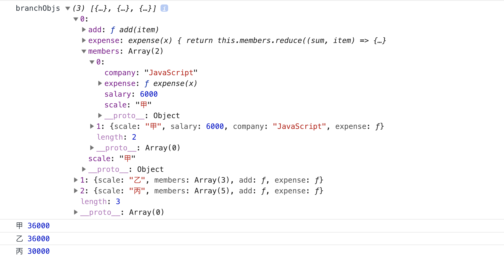
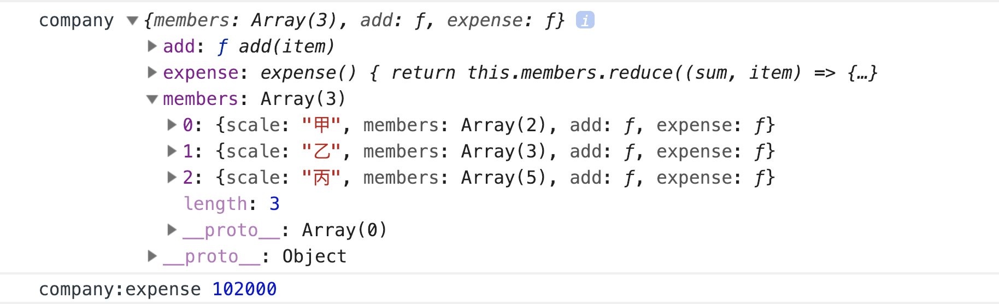

<!DOCTYPE html><html class="theme-next mist" lang="zh-Hans"><head><meta name="generator" content="Hexo 3.9.0"><meta charset="UTF-8"><meta name="baidu-site-verification" content="dil57BBbBc"><meta http-equiv="X-UA-Compatible" content="IE=edge"><meta name="viewport" content="width=device-width,initial-scale=1,maximum-scale=1"><meta name="theme-color" content="#222"><link rel="manifest" href="/manifest.json"><link rel="stylesheet" media="all" href="/lib/Han/dist/han.min.css?v=3.3"><meta http-equiv="Cache-Control" content="no-transform"><meta http-equiv="Cache-Control" content="no-siteapp"><meta name="google-site-verification" content="YH32omENY7b_BdEuIWv46jSBK-0Vyw_dWbJTGNBblT0"><link href="https://cdn.jsdelivr.net/gh/tonsky/FiraCode@1.206/distr/fira_code.css" rel="stylesheet" type="text/css"><link href="https://cdnjs.cloudflare.com/ajax/libs/font-awesome/4.7.0/css/font-awesome.min.css" rel="stylesheet" type="text/css"><link href="/css/main.css?v=5.1.4" rel="stylesheet" type="text/css"><link rel="apple-touch-icon" sizes="180x180" href="/images/favicon.ico?v=5.1.4"><link rel="icon" type="image/png" sizes="32x32" href="/images/favicon.ico?v=5.1.4"><link rel="icon" type="image/png" sizes="16x16" href="/images/favicon.ico?v=5.1.4"><link rel="icon" type="image/png" sizes="16x16" href="/images/favicon.ico?v=5.1.4"><link rel="icon" type="image/png" sizes="16x16" href="/images/favicon.ico?v=5.1.4"><link rel="icon" type="image/png" sizes="16x16" href="/images/favicon.ico?v=5.1.4"><meta name="keywords" content="组合模式,"><meta name="description" content="组合模式就是用小的子对象来构建更大的对象, 将对象组合成树形结构, 以表示 “部分-整体” 的层次结构. 位于底层最小的对象, 我们在这里称为叶对象, 由叶对象组成的组合对象我们称为分支对象, 位于最顶层的根对象在这里我们也称为分支对象. 不过它们只是结构上呈现出父子关系. 组合模式最大的好处可以一致性地对待分支对象和叶对象, 这也就要求了它们有着相同的接口.在咬文嚼字说策略中, 我们对员工进行考"><meta name="keywords" content="组合模式"><meta property="og:type" content="article"><meta property="og:title" content="在JavaScript中尝试组合模式"><meta property="og:url" content="https://yexiaochen.github.io/在JavaScript中尝试组合模式/index.html"><meta property="og:site_name" content="贪空"><meta property="og:description" content="组合模式就是用小的子对象来构建更大的对象, 将对象组合成树形结构, 以表示 “部分-整体” 的层次结构. 位于底层最小的对象, 我们在这里称为叶对象, 由叶对象组成的组合对象我们称为分支对象, 位于最顶层的根对象在这里我们也称为分支对象. 不过它们只是结构上呈现出父子关系. 组合模式最大的好处可以一致性地对待分支对象和叶对象, 这也就要求了它们有着相同的接口.在咬文嚼字说策略中, 我们对员工进行考"><meta property="og:locale" content="zh-Hans"><meta property="og:image" content="https://yexiaochen.github.io/images/compositeMode.png"><meta property="og:image" content="https://yexiaochen.github.io/images/companyExpense.png"><meta property="og:updated_time" content="2023-02-06T15:14:57.595Z"><meta name="twitter:card" content="summary"><meta name="twitter:title" content="在JavaScript中尝试组合模式"><meta name="twitter:description" content="组合模式就是用小的子对象来构建更大的对象, 将对象组合成树形结构, 以表示 “部分-整体” 的层次结构. 位于底层最小的对象, 我们在这里称为叶对象, 由叶对象组成的组合对象我们称为分支对象, 位于最顶层的根对象在这里我们也称为分支对象. 不过它们只是结构上呈现出父子关系. 组合模式最大的好处可以一致性地对待分支对象和叶对象, 这也就要求了它们有着相同的接口.在咬文嚼字说策略中, 我们对员工进行考"><meta name="twitter:image" content="https://yexiaochen.github.io/images/compositeMode.png"><script type="text/javascript" id="hexo.configurations">var NexT=window.NexT||{},CONFIG={root:"/",scheme:"Mist",version:"5.1.4",sidebar:{position:"left",display:"hide",offset:12,b2t:!1,scrollpercent:!1,onmobile:!0},fancybox:!1,tabs:!0,motion:{enable:!1,async:!1,transition:{post_block:"fadeIn",post_header:"slideDownIn",post_body:"slideDownIn",coll_header:"slideLeftIn",sidebar:"slideUpIn"}},duoshuo:{userId:"0",author:"博主"},algolia:{applicationID:"",apiKey:"",indexName:"",hits:{per_page:10},labels:{input_placeholder:"Search for Posts",hits_empty:"We didn't find any results for the search: ${query}",hits_stats:"${hits} results found in ${time} ms"}}}</script><link rel="canonical" href="https://yexiaochen.github.io/在JavaScript中尝试组合模式/"><title>在JavaScript中尝试组合模式 | 贪空</title><script type="text/javascript">var _hmt=_hmt||[];!function(){var e=document.createElement("script");e.src="https://hm.baidu.com/hm.js?7503c6e413a2a7205320ec2396c811d0";var t=document.getElementsByTagName("script")[0];t.parentNode.insertBefore(e,t)}()</script></head><body itemscope itemtype="http://schema.org/WebPage" lang="zh-Hans"><div class="container sidebar-position-left page-post-detail"><div class="headband"></div><header id="header" class="header" itemscope itemtype="http://schema.org/WPHeader"><div class="header-inner"><div class="site-brand-wrapper"><div class="site-meta"><div class="custom-logo-site-title"><a href="/" class="brand" rel="start"><span class="logo-line-before"><i></i></span> <span class="site-title">贪空</span> <span class="logo-line-after"><i></i></span></a></div><h1 class="site-subtitle" itemprop="description">贪空 Blog</h1></div><div class="site-nav-toggle"><button><span class="btn-bar"></span> <span class="btn-bar"></span> <span class="btn-bar"></span></button></div></div><nav class="site-nav"><ul id="menu" class="menu"><li class="menu-item menu-item-home"><a href="/" rel="section"><i class="menu-item-icon fa fa-fw fa-home"></i><br>首页</a></li><li class="menu-item menu-item-tags"><a href="/tags/" rel="section"><i class="menu-item-icon fa fa-fw fa-tags"></i><br>标签</a></li><li class="menu-item menu-item-categories"><a href="/categories/" rel="section"><i class="menu-item-icon fa fa-fw fa-th"></i><br>分类</a></li><li class="menu-item menu-item-archives"><a href="/archives/" rel="section"><i class="menu-item-icon fa fa-fw fa-archive"></i><br>归档</a></li></ul></nav></div></header><main id="main" class="main"><div class="main-inner"><div class="content-wrap"><div id="content" class="content"><div id="posts" class="posts-expand"><article class="post post-type-normal" itemscope itemtype="http://schema.org/Article"><div class="post-block"><link itemprop="mainEntityOfPage" href="https://yexiaochen.github.io/在JavaScript中尝试组合模式/"><span hidden itemprop="author" itemscope itemtype="http://schema.org/Person"><meta itemprop="name" content="贪空"><meta itemprop="description" content><meta itemprop="image" content="/images/avatar.jpeg"></span><span hidden itemprop="publisher" itemscope itemtype="http://schema.org/Organization"><meta itemprop="name" content="贪空"></span><header class="post-header"><h2 class="post-title" itemprop="name headline">在JavaScript中尝试组合模式</h2><div class="post-meta"><span class="post-time"><span class="post-meta-item-icon"><i class="fa fa-calendar-o"></i> </span><span class="post-meta-item-text">发表于</span> <time title="创建于" itemprop="dateCreated datePublished" datetime="2019-01-31T20:12:14+08:00">2019-01-31 </time><span class="post-meta-divider">|</span> <span class="post-meta-item-icon"><i class="fa fa-calendar-check-o"></i> </span><span class="post-meta-item-text">更新于&#58;</span> <time title="更新于" itemprop="dateModified" datetime="2023-02-06T23:14:57+08:00">2023-02-06 </time></span><span class="post-category"><span class="post-meta-divider">|</span> <span class="post-meta-item-icon"><i class="fa fa-folder-o"></i> </span><span class="post-meta-item-text">分类于</span> <span itemprop="about" itemscope itemtype="http://schema.org/Thing"><a href="/categories/设计模式/" itemprop="url" rel="index"><span itemprop="name">设计模式</span></a></span></span><div class="post-wordcount"><span class="post-meta-item-icon"><i class="fa fa-file-word-o"></i> </span><span class="post-meta-item-text">字数统计&#58;</span> <span title="字数统计">1,030 字 </span><span class="post-meta-divider">|</span> <span class="post-meta-item-icon"><i class="fa fa-clock-o"></i> </span><span class="post-meta-item-text">阅读时长 &asymp;</span> <span title="阅读时长">4 分钟</span></div></div></header><div class="post-body han-init-context" itemprop="articleBody"><p>组合模式就是用小的子对象来构建更大的对象, 将对象组合成树形结构, 以表示 “部分-整体” 的层次结构. 位于底层最小的对象, 我们在这里称为叶对象, 由叶对象组成的组合对象我们称为分支对象, 位于最顶层的根对象在这里我们也称为分支对象. 不过它们只是结构上呈现出父子关系. 组合模式最大的好处可以一致性地对待分支对象和叶对象, 这也就要求了它们有着相同的接口.<br>在<a href="http://yexiaochen.github.io/%E5%92%AC%E6%96%87%E5%9A%BC%E5%AD%97%E8%AF%B4%E7%AD%96%E7%95%A5/">咬文嚼字说策略</a>中, 我们对员工进行考核, 划分了甲乙丙三个等级. 现在, 公司决定结合等级以资鼓励.<br><em>以下所有代码参见<a href="https://codepen.io/yexiaochen/pen/bzgQWb" rel="external nofollow noopener noreferrer" target="_blank">compositeMode</a>.</em></p><h2 id="开销的占比"><a href="#开销的占比" class="headerlink" title="开销的占比"></a>开销的占比</h2><p>现有考核人员:</p><table><thead><tr><th style="text-align:center">考核项目\考核人</th><th style="text-align:center">等级</th><th style="text-align:center">月薪</th></tr></thead><tbody><tr><td style="text-align:center">person_1</td><td style="text-align:center">甲</td><td style="text-align:center">6k</td></tr><tr><td style="text-align:center">person_2</td><td style="text-align:center">乙</td><td style="text-align:center">9k</td></tr><tr><td style="text-align:center">person_3</td><td style="text-align:center">乙</td><td style="text-align:center">4k</td></tr><tr><td style="text-align:center">person_4</td><td style="text-align:center">乙</td><td style="text-align:center">5k</td></tr><tr><td style="text-align:center">person_5</td><td style="text-align:center">丙</td><td style="text-align:center">6k</td></tr><tr><td style="text-align:center">person_6</td><td style="text-align:center">丙</td><td style="text-align:center">5k</td></tr><tr><td style="text-align:center">person_7</td><td style="text-align:center">丙</td><td style="text-align:center">6k</td></tr><tr><td style="text-align:center">person_8</td><td style="text-align:center">丙</td><td style="text-align:center">4k</td></tr><tr><td style="text-align:center">person_9</td><td style="text-align:center">甲</td><td style="text-align:center">8k</td></tr></tbody></table><figure class="highlight javascript"><table><tr><td class="gutter"><pre><span class="line">1</span><br><span class="line">2</span><br><span class="line">3</span><br><span class="line">4</span><br><span class="line">5</span><br><span class="line">6</span><br><span class="line">7</span><br><span class="line">8</span><br><span class="line">9</span><br><span class="line">10</span><br><span class="line">11</span><br><span class="line">12</span><br></pre></td><td class="code"><pre><span class="line"><span class="keyword">const</span> persons = [</span><br><span class="line">    &#123;<span class="attr">scale</span>:<span class="string">'甲'</span>, <span class="attr">salary</span>: <span class="number">6000</span>, <span class="attr">company</span>: <span class="string">'JavaScript'</span>&#125;,</span><br><span class="line">    &#123;<span class="attr">scale</span>:<span class="string">'乙'</span>, <span class="attr">salary</span>: <span class="number">9000</span>, <span class="attr">company</span>: <span class="string">'JavaScript'</span>&#125;,</span><br><span class="line">    &#123;<span class="attr">scale</span>:<span class="string">'乙'</span>, <span class="attr">salary</span>: <span class="number">4000</span>, <span class="attr">company</span>: <span class="string">'JavaScript'</span>&#125;,</span><br><span class="line">    &#123;<span class="attr">scale</span>:<span class="string">'乙'</span>, <span class="attr">salary</span>: <span class="number">5000</span>, <span class="attr">company</span>: <span class="string">'JavaScript'</span>&#125;,</span><br><span class="line">    &#123;<span class="attr">scale</span>:<span class="string">'丙'</span>, <span class="attr">salary</span>: <span class="number">6000</span>, <span class="attr">company</span>: <span class="string">'JavaScript'</span>&#125;,</span><br><span class="line">    &#123;<span class="attr">scale</span>:<span class="string">'丙'</span>, <span class="attr">salary</span>: <span class="number">5000</span>, <span class="attr">company</span>: <span class="string">'JavaScript'</span>&#125;,</span><br><span class="line">    &#123;<span class="attr">scale</span>:<span class="string">'丙'</span>, <span class="attr">salary</span>: <span class="number">6000</span>, <span class="attr">company</span>: <span class="string">'JavaScript'</span>&#125;,</span><br><span class="line">    &#123;<span class="attr">scale</span>:<span class="string">'丙'</span>, <span class="attr">salary</span>: <span class="number">4000</span>, <span class="attr">company</span>: <span class="string">'JavaScript'</span>&#125;,</span><br><span class="line">    &#123;<span class="attr">scale</span>:<span class="string">'丙'</span>, <span class="attr">salary</span>: <span class="number">9000</span>, <span class="attr">company</span>: <span class="string">'JavaScript'</span>&#125;,</span><br><span class="line">    &#123;<span class="attr">scale</span>:<span class="string">'甲'</span>, <span class="attr">salary</span>: <span class="number">6000</span>, <span class="attr">company</span>: <span class="string">'JavaScript'</span>&#125;,</span><br><span class="line">]</span><br></pre></td></tr></table></figure><p>等级与月薪相关, 分别为3倍月薪、2倍月薪、1倍月薪.</p><table><thead><tr><th style="text-align:center">等级</th><th style="text-align:center">甲</th><th style="text-align:center">乙</th><th style="text-align:center">丙</th></tr></thead><tbody><tr><td style="text-align:center">月薪倍率</td><td style="text-align:center">3</td><td style="text-align:center">2</td><td style="text-align:center">1</td></tr></tbody></table><figure class="highlight javascript"><table><tr><td class="gutter"><pre><span class="line">1</span><br><span class="line">2</span><br><span class="line">3</span><br><span class="line">4</span><br><span class="line">5</span><br></pre></td><td class="code"><pre><span class="line"><span class="keyword">const</span> scaleMap = &#123;</span><br><span class="line">  <span class="string">'甲'</span>: <span class="number">3</span>,</span><br><span class="line">  <span class="string">'乙'</span>: <span class="number">2</span>,</span><br><span class="line">  <span class="string">'丙'</span>: <span class="number">1</span></span><br><span class="line">&#125;</span><br></pre></td></tr></table></figure><p>到底需要拿出多少钱奖励呢? 甲乙丙三组人分别占比多少呢? 针对这样的需求, 我们尝试着用组合模式计算一下.</p><h2 id="叶对象与分支对象"><a href="#叶对象与分支对象" class="headerlink" title="叶对象与分支对象"></a>叶对象与分支对象</h2><p>上面也提到了, 组合模式中有两类对象. 一个是分支对象, 一个是叶对象. 分支对象是叶对象的集合, 保存着叶对象的引用, 可以操作叶对象(比如添加, 执行). 而叶对象只要暴露接口即可.<br>现在我们从简单的开始, 造一个生产叶对象的函数.</p><figure class="highlight javascript"><table><tr><td class="gutter"><pre><span class="line">1</span><br><span class="line">2</span><br><span class="line">3</span><br><span class="line">4</span><br><span class="line">5</span><br><span class="line">6</span><br><span class="line">7</span><br><span class="line">8</span><br></pre></td><td class="code"><pre><span class="line"><span class="keyword">const</span> leaf = <span class="function"><span class="params">params</span> =&gt;</span> &#123;</span><br><span class="line">    <span class="keyword">return</span> &#123;</span><br><span class="line">        ...params,</span><br><span class="line">        expense() &#123;</span><br><span class="line">            <span class="keyword">return</span> scaleMap[params.scale]*params.salary</span><br><span class="line">        &#125;</span><br><span class="line">    &#125;</span><br><span class="line">&#125;;</span><br></pre></td></tr></table></figure><p>分支对象就稍微麻烦些了, 因为需要管理叶对象.</p><figure class="highlight javascript"><table><tr><td class="gutter"><pre><span class="line">1</span><br><span class="line">2</span><br><span class="line">3</span><br><span class="line">4</span><br><span class="line">5</span><br><span class="line">6</span><br><span class="line">7</span><br><span class="line">8</span><br><span class="line">9</span><br><span class="line">10</span><br><span class="line">11</span><br><span class="line">12</span><br><span class="line">13</span><br><span class="line">14</span><br></pre></td><td class="code"><pre><span class="line"><span class="keyword">const</span> branch = <span class="function"><span class="params">params</span> =&gt;</span> &#123;</span><br><span class="line">    <span class="keyword">return</span> &#123;</span><br><span class="line">        ...params,</span><br><span class="line">        members: [],</span><br><span class="line">        add(item) &#123;</span><br><span class="line">            <span class="keyword">this</span>.members.push(item)</span><br><span class="line">        &#125;,</span><br><span class="line">        expense() &#123;</span><br><span class="line">            <span class="keyword">return</span> <span class="keyword">this</span>.members.reduce(<span class="function">(<span class="params">sum, item</span>) =&gt;</span> &#123;</span><br><span class="line">                <span class="keyword">return</span> sum + item.expense()</span><br><span class="line">            &#125;, <span class="number">0</span>)</span><br><span class="line">        &#125;</span><br><span class="line">    &#125;</span><br><span class="line">&#125;;</span><br></pre></td></tr></table></figure><p><code>expense()</code> 的方法不论是在分支对象还是叶对象上, 或者说不清楚是分支对象还是叶对象, 我们都可以得到相应的结果. 在分支对象里, 保存着叶对象的引用, 我们可以对叶对象进行任何操作.</p><h2 id="从JSON数据到树形结构"><a href="#从JSON数据到树形结构" class="headerlink" title="从JSON数据到树形结构"></a>从JSON数据到树形结构</h2><p>组合模式就是这么简单, 剩下的就是如何 JSON 数据转换成层次分明的结构了.</p><figure class="highlight javascript"><table><tr><td class="gutter"><pre><span class="line">1</span><br><span class="line">2</span><br><span class="line">3</span><br><span class="line">4</span><br><span class="line">5</span><br><span class="line">6</span><br><span class="line">7</span><br><span class="line">8</span><br><span class="line">9</span><br><span class="line">10</span><br><span class="line">11</span><br><span class="line">12</span><br><span class="line">13</span><br><span class="line">14</span><br><span class="line">15</span><br><span class="line">16</span><br><span class="line">17</span><br><span class="line">18</span><br><span class="line">19</span><br><span class="line">20</span><br><span class="line">21</span><br><span class="line">22</span><br><span class="line">23</span><br><span class="line">24</span><br></pre></td><td class="code"><pre><span class="line"><span class="keyword">const</span> convertData = <span class="function"><span class="params">array</span> =&gt;</span> &#123;</span><br><span class="line">    <span class="keyword">const</span> branchList = [];</span><br><span class="line">    <span class="keyword">const</span> branchObjs = [];</span><br><span class="line">    array.forEach(<span class="function"><span class="params">item</span> =&gt;</span> &#123;</span><br><span class="line">        <span class="keyword">let</span> leafObj = leaf(item);</span><br><span class="line">        <span class="keyword">if</span> (!branchList.includes(item.scale))&#123;</span><br><span class="line">            <span class="keyword">let</span> params = &#123;</span><br><span class="line">                scale: item.scale</span><br><span class="line">            &#125;</span><br><span class="line">            <span class="keyword">let</span> branchObj = branch(params)</span><br><span class="line">            branchObjs.push(branchObj)</span><br><span class="line">            branchList.push(item.scale)</span><br><span class="line">        &#125;</span><br><span class="line">    branchObjs.filter(<span class="function"><span class="params">obj</span> =&gt;</span> obj.scale == item.scale)[<span class="number">0</span>].add(leafObj);</span><br><span class="line">    &#125;)</span><br><span class="line">    <span class="keyword">return</span> branchObjs;</span><br><span class="line">&#125;</span><br><span class="line"><span class="built_in">console</span>.log(<span class="string">'branchObjs'</span>, convertData(persons))</span><br><span class="line"><span class="keyword">const</span> scaleA = convertData(persons)[<span class="number">0</span>];</span><br><span class="line"><span class="keyword">const</span> scaleB = convertData(persons)[<span class="number">1</span>];</span><br><span class="line"><span class="keyword">const</span> scaleC = convertData(persons)[<span class="number">2</span>];</span><br><span class="line"><span class="built_in">console</span>.log(<span class="string">'甲'</span>, scaleA.expense())</span><br><span class="line"><span class="built_in">console</span>.log(<span class="string">'乙'</span>, scaleB.expense())</span><br><span class="line"><span class="built_in">console</span>.log(<span class="string">'丙'</span>, scaleC.expense())</span><br></pre></td></tr></table></figure><p>最终结果展示</p><p></p><p>如果我们想知道公司的总支出, 也可以把 scaleA, scaleB, scaleC 组合在一起作为公司的一子集.</p><figure class="highlight javascript"><table><tr><td class="gutter"><pre><span class="line">1</span><br><span class="line">2</span><br><span class="line">3</span><br><span class="line">4</span><br><span class="line">5</span><br></pre></td><td class="code"><pre><span class="line"><span class="keyword">const</span> company = branch();</span><br><span class="line">company.add(scaleA);</span><br><span class="line">company.add(scaleB);</span><br><span class="line">company.add(scaleC);</span><br><span class="line">company.expense()</span><br></pre></td></tr></table></figure><p></p><p>不难发现, 我们可以随意组装对象而不会影响到其它节点, 任何一个集合或个体都能够单独运行. 我们也可以根据需要去组合更复杂的结构. 但是, 如果通过组合模式创建了太多的对象, 那么这些对象可能会让系统负担不起.</p><h2 id="小结"><a href="#小结" class="headerlink" title="小结"></a>小结</h2><ol><li><p>组合模式对象形式上至少有两种, 分支对象和叶对象.</p></li><li><p>分支对象和叶对象拥有相同的接口, 且对一组叶对象操作具有同步一致性.</p></li><li><p>组合模式是 HAS-A (聚合)关系, 不是 IS-A.</p></li></ol></div><div><div><div style="text-align:center;color:#555;font-size:18px">------------- The End -------------</div></div></div><div><ul class="post-copyright"><li class="post-copyright-author"><strong>本文作者：</strong> 贪空</li><li class="post-copyright-link"><strong>本文链接：</strong> <a href="https://yexiaochen.github.io/在JavaScript中尝试组合模式/" title="在JavaScript中尝试组合模式">https://yexiaochen.github.io/在JavaScript中尝试组合模式/</a></li><li class="post-copyright-license"><strong>版权声明： </strong>本博客所有文章除特别声明外，均采用 <a href="https://creativecommons.org/licenses/by-nc-sa/3.0/" rel="external nofollow noopener noreferrer" target="_blank">CC BY-NC-SA 3.0</a> 许可协议。转载请注明出处！</li></ul></div><footer class="post-footer"><div class="post-tags"><a href="/tags/组合模式/" rel="tag"><i class="fa fa-tag"></i> 组合模式</a></div><div class="post-nav"><div class="post-nav-next post-nav-item"><a href="/咬文嚼字说策略/" rel="next" title="咬文嚼字说策略"><i class="fa fa-chevron-left"></i> 咬文嚼字说策略</a></div><span class="post-nav-divider"></span><div class="post-nav-prev post-nav-item"><a href="/白话MVC-MVP-MVVM/" rel="prev" title="白话MVC/MVP/MVVM">白话MVC/MVP/MVVM <i class="fa fa-chevron-right"></i></a></div></div></footer></div></article><div class="post-spread"></div></div></div><div class="comments" id="comments"><div onclick="showGitment()" id="gitment-display-button">显示评论</div><div id="gitment-container" style="display:none"></div></div></div><div class="sidebar-toggle"><div class="sidebar-toggle-line-wrap"><span class="sidebar-toggle-line sidebar-toggle-line-first"></span> <span class="sidebar-toggle-line sidebar-toggle-line-middle"></span> <span class="sidebar-toggle-line sidebar-toggle-line-last"></span></div></div><aside id="sidebar" class="sidebar"><div id="sidebar-dimmer"></div><div class="sidebar-inner"><ul class="sidebar-nav motion-element"><li class="sidebar-nav-toc sidebar-nav-active" data-target="post-toc-wrap">文章目录</li><li class="sidebar-nav-overview" data-target="site-overview-wrap">站点概览</li></ul><section class="site-overview-wrap sidebar-panel"><div class="site-overview"><div class="site-author motion-element" itemprop="author" itemscope itemtype="http://schema.org/Person"><p class="site-author-name" itemprop="name">贪空</p><p class="site-description motion-element" itemprop="description"></p></div><nav class="site-state motion-element"><div class="site-state-item site-state-posts"><a href="/archives/"><span class="site-state-item-count">68</span> <span class="site-state-item-name">日志</span></a></div><div class="site-state-item site-state-categories"><a href="/categories/index.html"><span class="site-state-item-count">11</span> <span class="site-state-item-name">分类</span></a></div><div class="site-state-item site-state-tags"><a href="/tags/index.html"><span class="site-state-item-count">118</span> <span class="site-state-item-name">标签</span></a></div></nav><div class="links-of-author motion-element"><span class="links-of-author-item"><a href="mailto:2277438436@qq.com" target="_blank" title="E-Mail" rel="external nofollow noopener noreferrer"><i class="fa fa-fw fa-envelope"></i>E-Mail</a></span></div></div></section><section class="post-toc-wrap motion-element sidebar-panel sidebar-panel-active"><div class="post-toc"><div class="post-toc-content"><ol class="nav"><li class="nav-item nav-level-2"><a class="nav-link" href="#开销的占比"><span class="nav-number">1.</span> <span class="nav-text">开销的占比</span></a></li><li class="nav-item nav-level-2"><a class="nav-link" href="#叶对象与分支对象"><span class="nav-number">2.</span> <span class="nav-text">叶对象与分支对象</span></a></li><li class="nav-item nav-level-2"><a class="nav-link" href="#从JSON数据到树形结构"><span class="nav-number">3.</span> <span class="nav-text">从JSON数据到树形结构</span></a></li><li class="nav-item nav-level-2"><a class="nav-link" href="#小结"><span class="nav-number">4.</span> <span class="nav-text">小结</span></a></li></ol></div></div></section></div></aside></div></main><footer id="footer" class="footer"><div class="footer-inner"><div class="copyright">&copy; 2018 &mdash; <span itemprop="copyrightYear">2023</span> <span class="with-love"><i class="fa fa-user"></i> </span><span class="author" itemprop="copyrightHolder">贪空</span></div></div></footer><div class="back-to-top"><i class="fa fa-arrow-up"></i></div></div><script type="text/javascript">"[object Function]"!==Object.prototype.toString.call(window.Promise)&&(window.Promise=null)</script><script type="text/javascript" src="https://cdnjs.cloudflare.com/ajax/libs/jquery/3.3.1/jquery.min.js"></script><script type="text/javascript" src="https://cdnjs.cloudflare.com/ajax/libs/fastclick/1.0.6/fastclick.min.js"></script><script type="text/javascript" src="https://cdnjs.cloudflare.com/ajax/libs/jquery_lazyload/1.9.7/jquery.lazyload.min.js"></script><script type="text/javascript" src="https://cdnjs.cloudflare.com/ajax/libs/velocity/1.2.1/velocity.min.js"></script><script type="text/javascript" src="https://cdnjs.cloudflare.com/ajax/libs/velocity/1.2.1/velocity.ui.min.js"></script><script type="text/javascript" src="/js/src/utils.js?v=5.1.4"></script><script type="text/javascript" src="/js/src/motion.js?v=5.1.4"></script><script type="text/javascript" src="/js/src/scrollspy.js?v=5.1.4"></script><script type="text/javascript" src="/js/src/post-details.js?v=5.1.4"></script><script type="text/javascript" src="/js/src/bootstrap.js?v=5.1.4"></script><link rel="stylesheet" href="https://cdn.jsdelivr.net/npm/gitalk@1/dist/gitalk.css"><script src="https://cdn.jsdelivr.net/npm/gitalk@1/dist/gitalk.min.js"></script><style>a.gitment-editor-footer-tip{display:none}.gitment-container.gitment-footer-container{display:none}</style><script type="text/javascript">function renderGitment(){new Gitalk({id:window.decodeURIComponent(window.location.pathname),owner:"yexiaochen",repo:"blogComments",distractionFreeMode:!1,admin:["yexiaochen"],clientSecret:"5df7f4f6edb8a65fef2d0cf7cb6fa40b04a44525",clientID:"fad749b2b67be41f767a"}).render("gitment-container")}function showGitment(){document.getElementById("gitment-display-button").style.display="none",document.getElementById("gitment-container").style.display="block",renderGitment()}</script><script>!function(){var t=document.createElement("script"),e=window.location.protocol.split(":")[0];t.src="https"===e?"https://zz.bdstatic.com/linksubmit/push.js":"http://push.zhanzhang.baidu.com/push.js";var s=document.getElementsByTagName("script")[0];s.parentNode.insertBefore(t,s)}()</script></body></html>